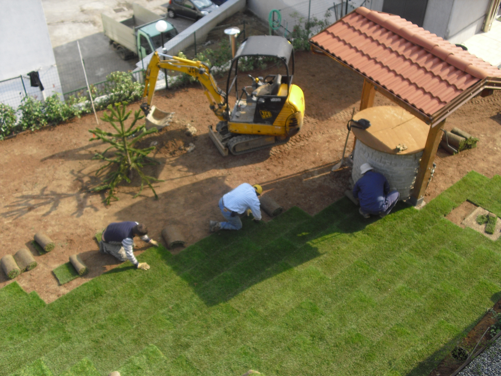
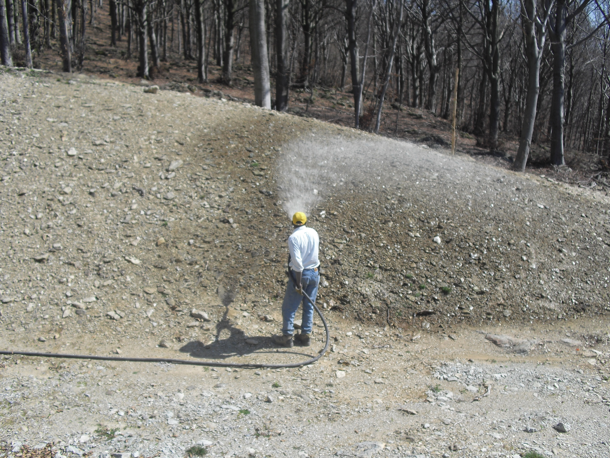
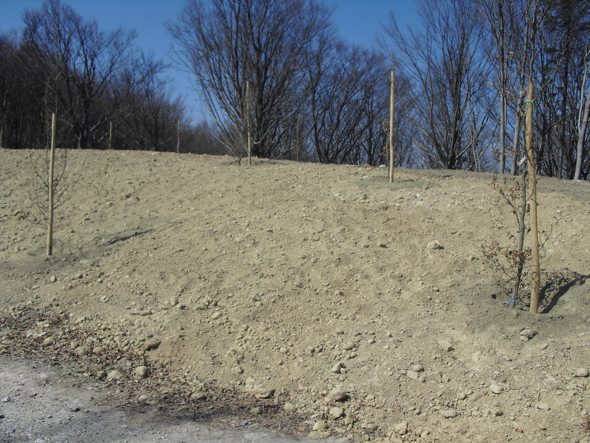
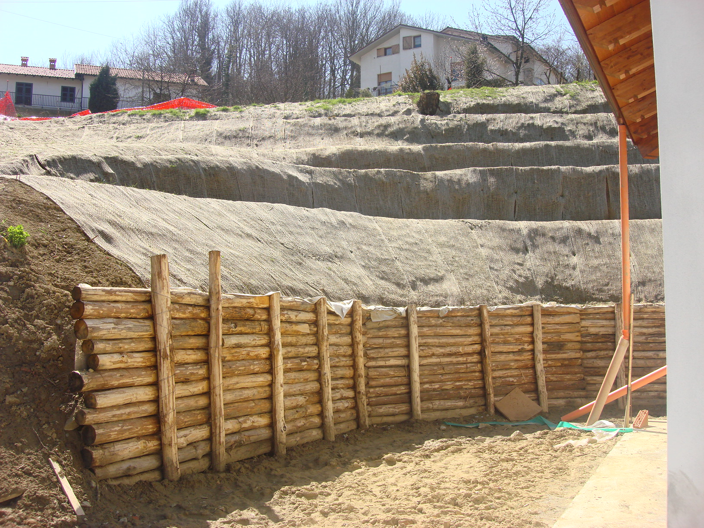
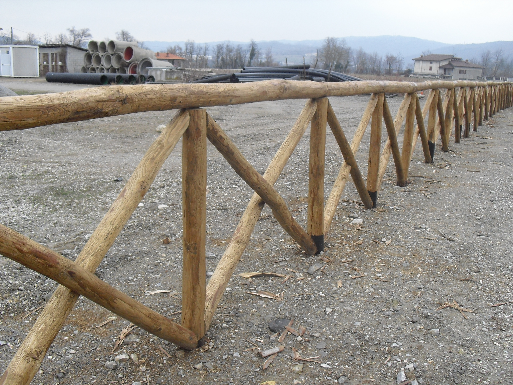
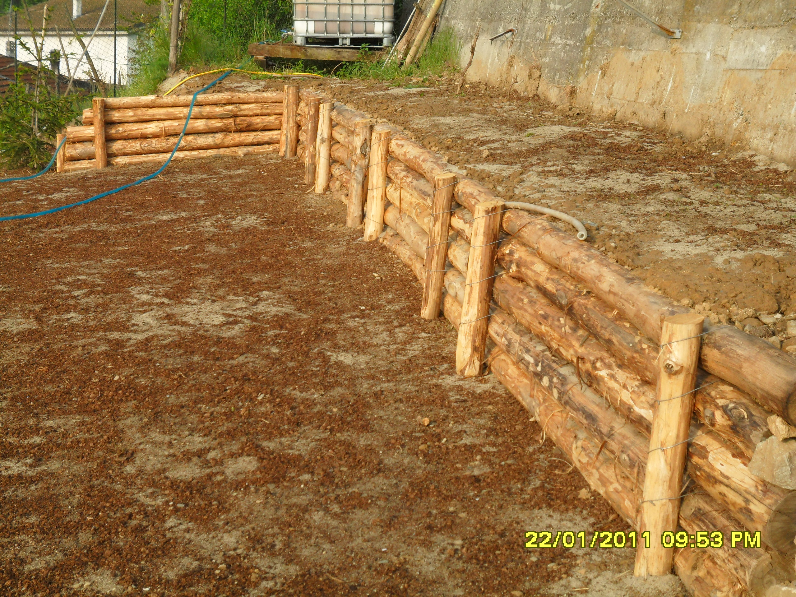
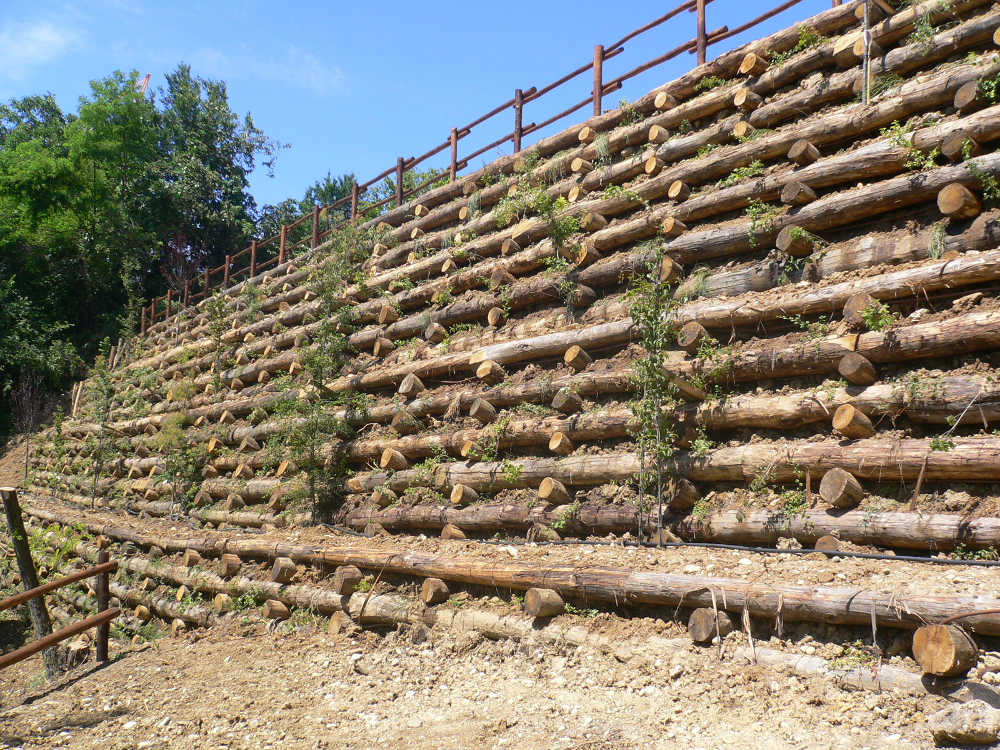
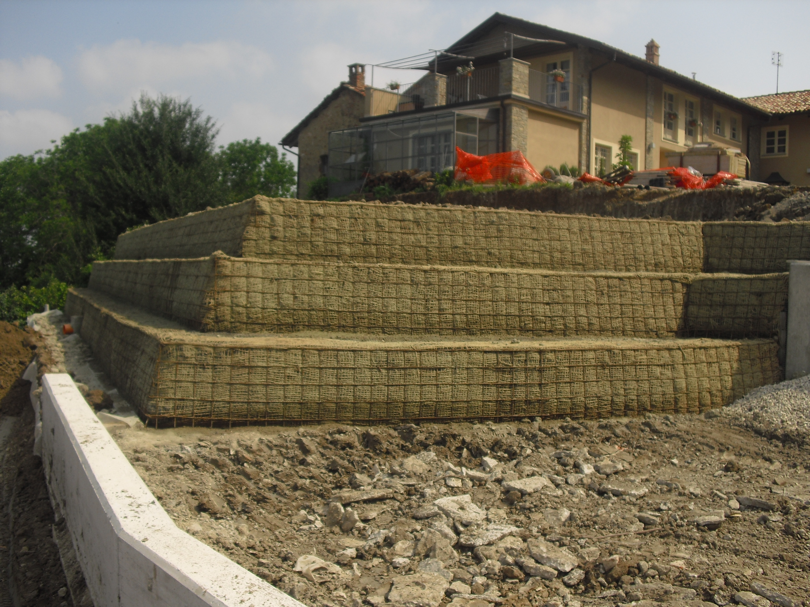

Formazione di prato eseguita mediante la regolarizzazione del piano di semina, con livellamento, sminuzzamento della terra; carico e trasporto in discarica degli eventuali materiali di risulta. Concimazione, stesa del tappeto erboso in zolle, rullatura e irrigazione.

L'inerbimento consiste nell'aspersione di una miscela formata da acqua, miscuglio di sementi di specie erbacee selezionate e idonee al sito, concime organico, collanti a sostanze miglioratrici del terreno; il tutto viene distribuito in un unica soluzione con speciali macchine irroratrici a forte pressione (idroseminatrici).

La messa a dimora di alberi in operazione di forestazione urbana, viene realizzata mediante scavo della buca, carico e trasporto in discarica del materiale di risulta, la provvista di terra vegetale, il carico e trasporto delle piante dal vivaio, la messa a dimora e la collocazione dei pali tutori in legno di castagno scortecciato, concimatura e relativo bagnamento.

L'opera è realizzata mediante la risagomatura di superfici di frana, consistente nel rimodellamento generale della superficie con escavatore onde ottenere un profilo regolare. Successivamente viene posata la rete in fibra naturale di juta.

La staccionata viene realizzata in legname di castagno scortecciato, con trattamento di olio protettivo, avente il diametro dei piantoni di cm 10/12, con piantoni ad interasse di mt 1,50 ed un'altezza fuori terra di circa mt 1,00; i pali in diagonale sono incrociati tipo croce di “Sant'Andrea”.

L'opera è realizzata con astoni e talee di salice su sponda di alveo. La sponda viene modellata tramite l'uso di escavatore, viene praticato uno scavo alla base della sponda, quindi si passa alla posa si due o più file di paletti di castagno, infissi nel terreno. Si procede con fornitura e posizionamento di uno strato continuo di astoni e talee di salice in senso trasversale alla direzione della corrente, con il diametro maggiore nel fosso al piede della scarpata ed ancorati alla sponda con filo di ferro zincato fissato ai paletti di legno; posa di uno strato di ciottoli in modo da favorire l'afflusso dell'acqua alle talee stesse. Infine si realizza una difesa in massi e ricoprimento degli astoni con uno strato di terra agraria.

La palizzata è costituita da pali di legname di castagno scortecciato, posato in maniera da realizzare un'opera di sostegno contro terra, di altezza variabile secondo l'occorrenza, legati e fermati a valle da piloti in legname scortecciato (diam cm 10/12), conficcati nel terreno per almeno mt 1,00 di profondità e con una densità di 1/ml.

Viene realizzata mediante l'uso di correnti e traversi in legno di castagno scortecciato (diam cm 20/25) fra loro fissati con barre ad aderenza migliorata (diam = 12 mm), ancorata al piano di base con piloti anch'essi ad aderenza migliorata (diam mm 32) in acciaio o in legname (lunghezza m 1,50 circa); inserimento di talee di specie arbustive e/o arboree ad elevata capacità vegetativa e capaci di emettere radici avventizie dal fusto, riempimento a strati con materiale ghiaio-terroso proveniente dagli scavi e/o riportato. Trasporto del legname a piè d'opera, taglio, allestimento e costruzione della struttura.
